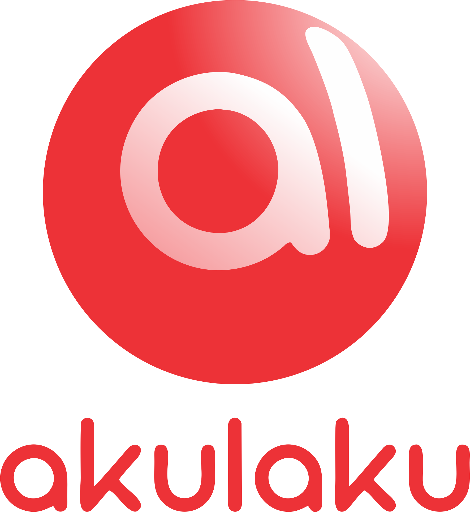
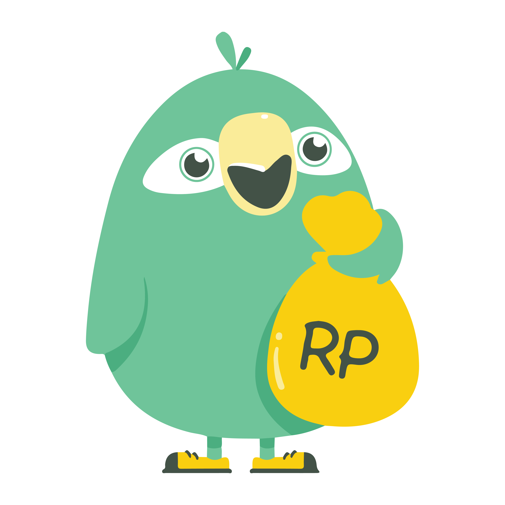
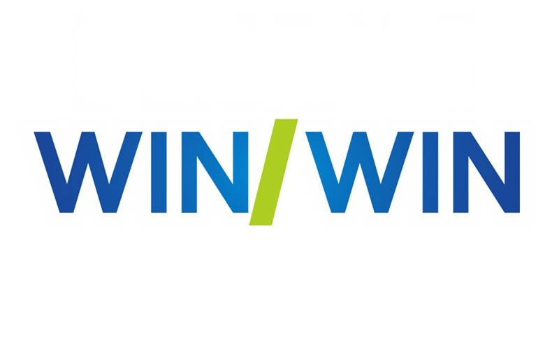
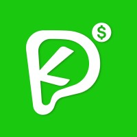
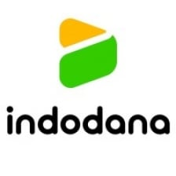

Tahapan Analisis Menggunakan Model IndoBERT Multitask Learning
Berikut urutan proses yang dilakukan sistem sebelum menghasilkan prediksi sentimen, emosi, dan tingkat keaslian ulasan.
Mengubah semua huruf menjadi huruf kecil.
Menghapus simbol, angka, dan karakter tak relevan.
Menormalkan kata tidak baku ke bentuk baku.
Memecah kalimat menjadi kata-kata (token).
Menghapus kata umum tanpa makna penting.
Mengembalikan kata ke bentuk dasarnya.
Visualisasi Ringkasan Analisis
Informasi Dataset
- Total Ulasan Dianalisis≈ 12.450 ulasan
- Jumlah Aplikasi8 Aplikasi Fintech
- Model AnalisisIndoBERT Multitask (Sentimen + Emosi + Autentikasi)
- Tanggal Analisis Terakhir20 Oktober 2025
Detail Hasil Analisis per Aplikasi
| Aplikasi | Sentimen Positif | Sentimen Negatif | Sentimen Netral | Keaslian Ulasan | Emosi Dominan |
|---|---|---|---|---|---|
| Akulaku | 68% | 20% | 12% | 92% | Bahagia |
| AdaKami | 54% | 26% | 20% | 87% | Cemas |
| EasyCash | 30% | 61% | 9% | 80% | Marah |
| Tunaiku | 72% | 18% | 10% | 93% | Bahagia |
| Pinjam GO | 35% | 59% | 6% | 85% | Kecewa |
| Pinjam Winwin | 70% | 20% | 10% | 90% | Lega |
| Kredit Pintar | 60% | 24% | 16% | 89% | Tenang |
| Julo | 76% | 14% | 10% | 94% | Puas |
Ringkasan Hasil Analisis Keseluruhan
Berdasarkan hasil analisis terhadap seluruh aplikasi pinjaman online, sistem IndoBERT Multitask Learning mendeteksi pola umum berikut:
Rata-Rata Sentimen Positif
63%
Menunjukkan tingkat kepuasan pengguna yang cukup tinggi.
Rata-Rata Keaslian Ulasan
89%
Mayoritas ulasan dianggap asli dan tidak terindikasi bot.
Sentimen Negatif
24%
Didominasi oleh ulasan terkait bunga tinggi & keterlambatan.
Daftar Aplikasi yang Telah Dianalisis
Analisis dilakukan menggunakan model IndoBERT Multitask untuk memprediksi sentimen, emosi, dan keaslian ulasan pengguna terhadap aplikasi pinjaman online.

Akulaku
😊 Sentimen Positif: 68%
❤️ Emosi Dominan: Bahagia
🛡️ Keaslian: 92%
Ada Kami
😐 Sentimen Netral: 54%
🌧️ Emosi Dominan: Cemas
🛡️ Keaslian: 87%
Easycash
😠 Sentimen Negatif: 61%
⚡ Emosi Dominan: Marah
🛡️ Keaslian: 80%
Tunaiku
😊 Sentimen Positif: 72%
❤️ Emosi Dominan: Bahagia
🛡️ Keaslian: 93%

Pinjam GO
😡 Sentimen Negatif: 59%
😞 Emosi Dominan: Kecewa
🛡️ Keaslian: 85%

Pinjam Winwin
😊 Sentimen Positif: 70%
😌 Emosi Dominan: Lega
🛡️ Keaslian: 90%

Kredit Pintar
😐 Sentimen Netral: 60%
☁️ Emosi Dominan: Tenang
🛡️ Keaslian: 89%

Julo
😊 Sentimen Positif: 76%
😍 Emosi Dominan: Puas
🛡️ Keaslian: 94%